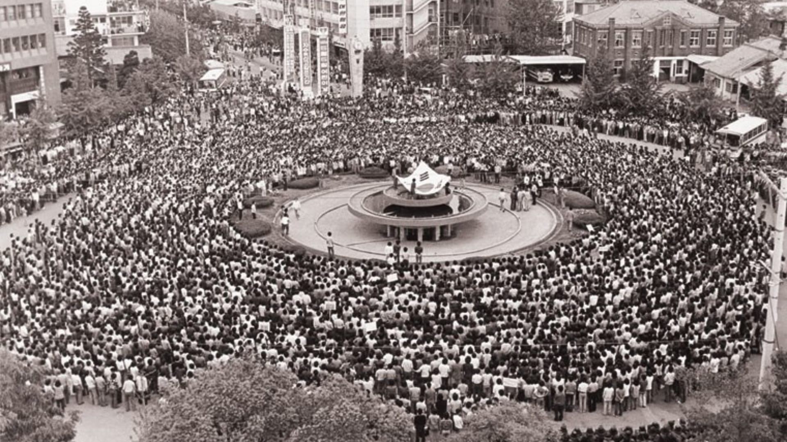
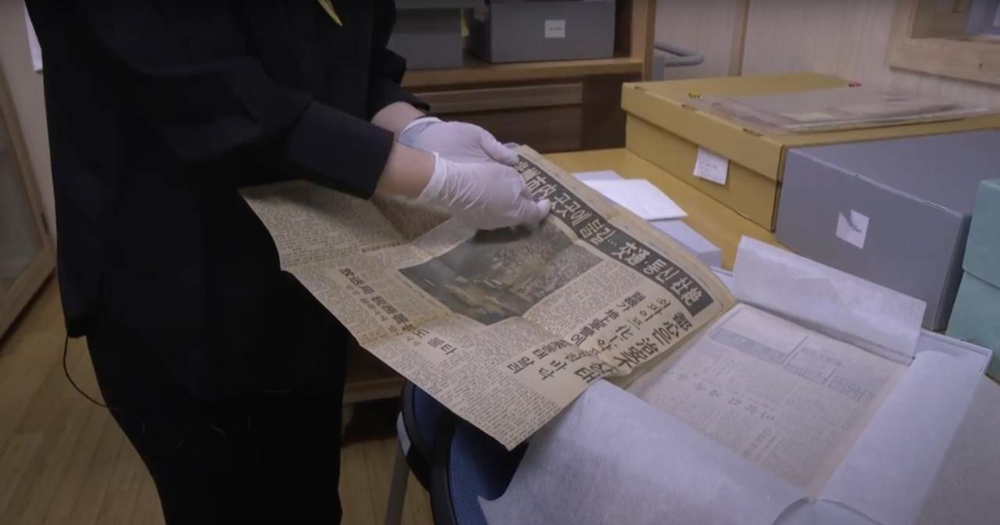
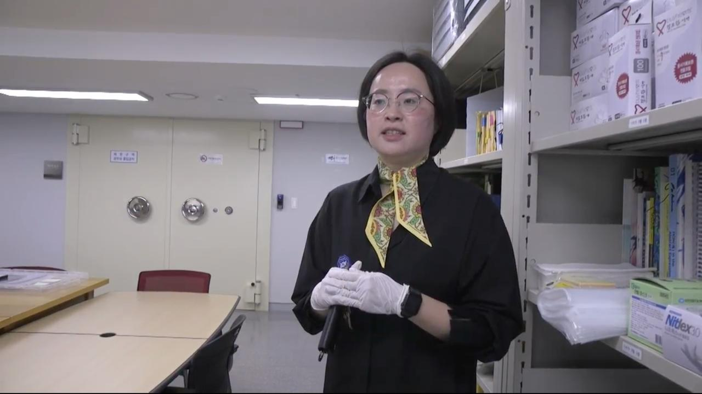
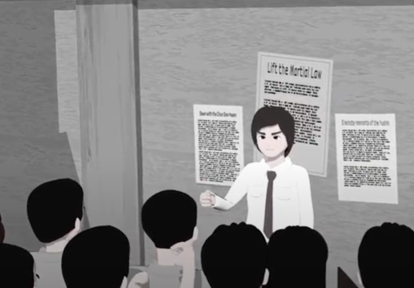

Main menu
This web documentary was created by

Watch the full documentary
 Introduction - The duty of remembrance and truth
Introduction - The duty of remembrance and truth
I. A) The Deconstruction of a Myth
 I. B)Patrick Chauvel, a Key Witness
I. B)Patrick Chauvel, a Key Witness

II. A) The place of archive images in the work of remembrance

II. B) The archivist's job

